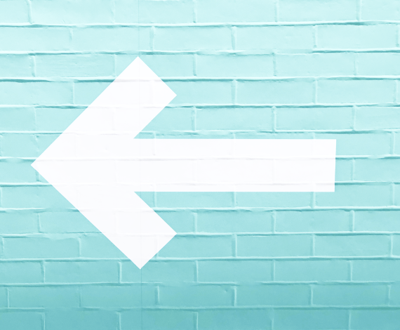
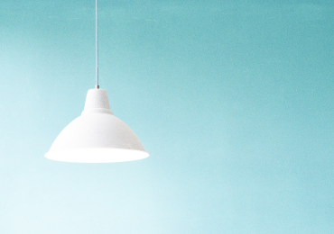
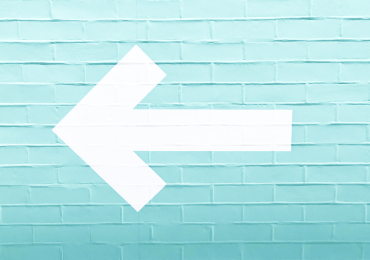
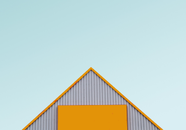

Manifest is a newborn theme.
Clean, simple and fast.
Blog


Latest Posts

Interface Design
8 June, 2020
UX traffic light colours
UI has to make a huge visual difference between warning, an alert and a success.

Technology
6 May, 2020
Using UX Design to Build a Sustainable Future
UI has to make a huge visual difference between warning, an alert and a success.

Visual Design
8 June, 2020
Creativity vs. UX
Is it possible to create a delightful user experience without following best UX practices?